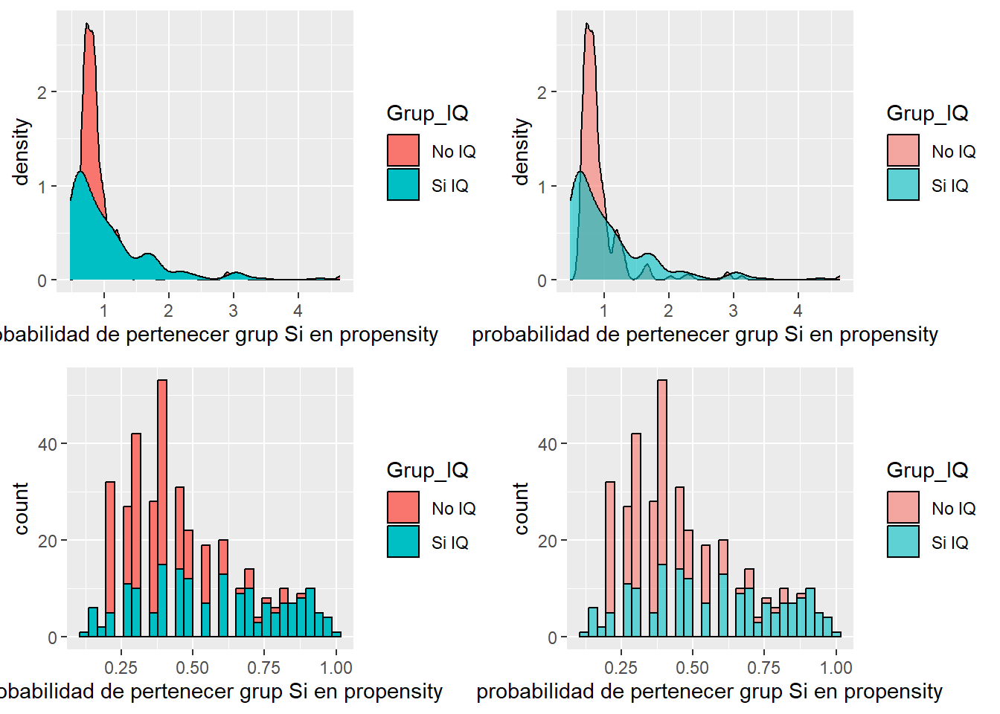

if(!require('pacman')){install.packages('pacman')}Loading required package: pacmanpacman::p_load(tidyverse,survey, tableone, ggpubr)if(!require('pacman')){install.packages('pacman')}Loading required package: pacmanpacman::p_load(tidyverse,survey, tableone, ggpubr)datos_imputados <- readRDS('Datos_imputados.rds') %>%
select(c(-NHC), identificador, everything())datos_imputados# A tibble: 371 × 50
identificador Grup_IQ edat_IQ sexe_home Pes Talla_m IMC plaquetes_preIQ
<int> <fct> <dbl> <fct> <dbl> <dbl> <dbl> <dbl>
1 1 No IQ 70 home 87 1.71 29.8 67
2 2 No IQ 79 dona 56 1.56 23.0 182
3 3 No IQ 64 home 73 1.7 25.3 66
4 4 No IQ 58 dona 50 1.57 20.3 152
5 5 No IQ 54 home 99 1.73 33.1 60
6 6 No IQ 70 home 125 1.8 38.6 102
7 7 No IQ 74 dona 62 1.5 27.6 104
8 8 No IQ 74 dona 71 1.48 32.4 104
9 9 No IQ 74 dona 58 1.56 23.8 104
10 10 No IQ 82 dona 60 1.59 23.7 61
# ℹ 361 more rows
# ℹ 42 more variables: Alb_gL_preIQ <dbl>, BB_mgdL_preIQ <dbl>,
# INR_preIQ <dbl>, AST_preIQ <dbl>, ALT_preIQ <dbl>, FA_preIQ <dbl>,
# GGT_preIQ <dbl>, Urea_mgdL_preIQ <dbl>, Creat_mgdL_preIQ <dbl>,
# MidaMelsa_mm <dbl>, FsC_Elastografia <dbl>, FsC <dbl>, hvpg <dbl>,
# Charlson_Index <dbl>, Pughpunts_basal <dbl>, MELD_basal <dbl>,
# Enol_Actiu <fct>, DIabetes <fct>, etiol_OH <fct>, TTO_Estatinas <fct>, …datos_imputados_transformados <- datos_imputados %>%
mutate(
DIabetes = droplevels(DIabetes,c('Metformina', 'Altres','ADO', 'dieta', 'ADO+Insulina','metformina+altres','ADO')),
SignesIndirectes_HTP = droplevels(SignesIndirectes_HTP,c('dubtós')),
presenciaCSPH = case_when(presenciaCSPH =='indeterminat' ~ 'no CSPH', TRUE ~ presenciaCSPH)
) %>%
select('identificador','Grup_IQ','edat_IQ','sexe_home',"IMC",'etiol_OH','Enol_Actiu',
"Charlson_Index","plaquetes_preIQ","DIabetes",'Pughpunts_basal',
'colaterals_shunts','MELD_basal','Alb_gL_preIQ','INR_preIQ','BB_mgdL_preIQ','Creat_mgdL_preIQ',
'HCC_prev','SignesIndirectes_HTP')variables_propensity <- c(
'Grup_IQ','edat_IQ','sexe_home',"IMC",'etiol_OH','Enol_Actiu',
"Charlson_Index","plaquetes_preIQ","DIabetes",'Pughpunts_basal',
'colaterals_shunts','MELD_basal','Alb_gL_preIQ','INR_preIQ','BB_mgdL_preIQ','Creat_mgdL_preIQ',
'HCC_prev','SignesIndirectes_HTP')mod_propensity <- glm(
formula = Grup_IQ ~
SignesIndirectes_HTP +
HCC_prev +
DIabetes +
sexe_home +
Charlson_Index
,
data = datos_imputados_transformados,
family=binomial(link="logit") )datos_imputados_propensity_1 <- datos_imputados_transformados %>%
mutate(prediciones=predict(mod_propensity,datos_imputados_transformados,type="response") )
datos_imputados_propensity_1 <- datos_imputados_propensity_1 %>%
mutate(standarized_weights = case_when(
Grup_IQ == 'Si IQ' ~ (177/(371))/ ( prediciones),
Grup_IQ == 'No IQ' ~ (194/(371))/ (1-prediciones)
)) datos_imputados_propensity_1# A tibble: 371 × 21
identificador Grup_IQ edat_IQ sexe_home IMC etiol_OH Enol_Actiu
<int> <fct> <dbl> <fct> <dbl> <fct> <fct>
1 1 No IQ 70 home 29.8 no no
2 2 No IQ 79 dona 23.0 no no
3 3 No IQ 64 home 25.3 no no
4 4 No IQ 58 dona 20.3 si si
5 5 No IQ 54 home 33.1 si si
6 6 No IQ 70 home 38.6 no no
7 7 No IQ 74 dona 27.6 no no
8 8 No IQ 74 dona 32.4 no no
9 9 No IQ 74 dona 23.8 no no
10 10 No IQ 82 dona 23.7 no no
# ℹ 361 more rows
# ℹ 14 more variables: Charlson_Index <dbl>, plaquetes_preIQ <dbl>,
# DIabetes <fct>, Pughpunts_basal <dbl>, colaterals_shunts <fct>,
# MELD_basal <dbl>, Alb_gL_preIQ <dbl>, INR_preIQ <dbl>, BB_mgdL_preIQ <dbl>,
# Creat_mgdL_preIQ <dbl>, HCC_prev <fct>, SignesIndirectes_HTP <fct>,
# prediciones <dbl>, standarized_weights <dbl>ggpubr::ggarrange(
plotlist = list(
datos_imputados_propensity_1 %>%
ggplot(aes(standarized_weights, fill = Grup_IQ)) +
geom_density() +
labs(x = 'probabilidad de pertenecer grup Si en propensity')
,
datos_imputados_propensity_1 %>%
ggplot(aes(standarized_weights, fill = Grup_IQ)) +
geom_density(alpha = 0.6) +
labs(x = 'probabilidad de pertenecer grup Si en propensity')
,
datos_imputados_propensity_1 %>%
ggplot(aes(prediciones, fill = Grup_IQ)) +
geom_histogram(color = 'black', alpha = 1) +
labs(x = 'probabilidad de pertenecer grup Si en propensity')
,
datos_imputados_propensity_1 %>%
ggplot(aes(prediciones, fill = Grup_IQ)) +
geom_histogram(color = 'black', alpha = 0.6) +
labs(x = 'probabilidad de pertenecer grup Si en propensity')
))`stat_bin()` using `bins = 30`. Pick better value with `binwidth`.
`stat_bin()` using `bins = 30`. Pick better value with `binwidth`.
Pacientes_incluidos_iptwdatos_propensity_1 <- svydesign(
ids = ~ 1,
data = datos_imputados_propensity_1,
strata = ~Grup_IQ,
weights = ~ datos_imputados_propensity_1$standarized_weights)
Pacientes_incluidos_Propensity_table_Weighted_1 <- svyCreateTableOne(
vars= datos_imputados_propensity_1 %>% select(-c(Grup_IQ, identificador)) %>% names(),
strata = "Grup_IQ",
data = Pacientes_incluidos_iptwdatos_propensity_1,
addOverall = T,
includeNA = T,
smd =TRUE)
print(Pacientes_incluidos_Propensity_table_Weighted_1, smd = TRUE) Stratified by Grup_IQ
Overall No IQ Si IQ
n 365.87 169.63 196.24
edat_IQ (mean (SD)) 63.82 (10.95) 63.69 (10.70) 63.94 (11.19)
sexe_home = home (%) 231.6 (63.3) 110.8 (65.3) 120.8 (61.6)
IMC (mean (SD)) 27.13 (5.11) 27.93 (4.68) 26.44 (5.38)
etiol_OH = si (%) 114.8 (31.4) 58.7 (34.6) 56.1 (28.6)
Enol_Actiu = si (%) 71.9 (19.7) 38.8 (22.9) 33.2 (16.9)
Charlson_Index (mean (SD)) 4.78 (2.04) 4.80 (1.49) 4.75 (2.42)
plaquetes_preIQ (mean (SD)) 118.96 (60.26) 99.87 (44.13) 135.46 (67.20)
DIabetes = insulina (%) 112.8 (30.8) 54.3 (32.0) 58.5 (29.8)
Pughpunts_basal (mean (SD)) 5.57 (1.01) 5.49 (0.82) 5.63 (1.14)
colaterals_shunts = si (%) 165.3 (45.2) 79.2 (46.7) 86.1 (43.9)
MELD_basal (mean (SD)) 9.30 (2.92) 9.45 (2.17) 9.16 (3.43)
Alb_gL_preIQ (mean (SD)) 36.67 (5.55) 36.88 (4.85) 36.48 (6.10)
INR_preIQ (mean (SD)) 1.17 (0.20) 1.18 (0.14) 1.16 (0.25)
BB_mgdL_preIQ (mean (SD)) 1.23 (0.84) 1.35 (0.79) 1.13 (0.87)
Creat_mgdL_preIQ (mean (SD)) 0.85 (0.36) 0.82 (0.19) 0.88 (0.46)
HCC_prev = si (%) 29.3 ( 8.0) 9.9 ( 5.8) 19.4 ( 9.9)
SignesIndirectes_HTP = si (%) 317.4 (86.7) 151.7 (89.4) 165.7 (84.5)
prediciones (mean (SD)) 0.42 (0.29) 0.40 (0.24) 0.43 (0.32)
standarized_weights (mean (SD)) 1.84 (1.81) 1.51 (1.83) 2.13 (1.73)
Stratified by Grup_IQ
p test SMD
n
edat_IQ (mean (SD)) 0.871 0.023
sexe_home = home (%) 0.559 0.078
IMC (mean (SD)) 0.070 0.296
etiol_OH = si (%) 0.370 0.129
Enol_Actiu = si (%) 0.366 0.150
Charlson_Index (mean (SD)) 0.868 0.025
plaquetes_preIQ (mean (SD)) <0.001 0.626
DIabetes = insulina (%) 0.716 0.047
Pughpunts_basal (mean (SD)) 0.348 0.145
colaterals_shunts = si (%) 0.691 0.056
MELD_basal (mean (SD)) 0.482 0.101
Alb_gL_preIQ (mean (SD)) 0.600 0.073
INR_preIQ (mean (SD)) 0.529 0.088
BB_mgdL_preIQ (mean (SD)) 0.053 0.256
Creat_mgdL_preIQ (mean (SD)) 0.070 0.188
HCC_prev = si (%) 0.260 0.151
SignesIndirectes_HTP = si (%) 0.483 0.147
prediciones (mean (SD)) 0.556 0.099
standarized_weights (mean (SD)) 0.143 0.352mod_propensity <- glm(
formula = Grup_IQ ~
SignesIndirectes_HTP +
HCC_prev +
DIabetes +
sexe_home +
Enol_Actiu +
plaquetes_preIQ +
log(sqrt(Charlson_Index)) +
Alb_gL_preIQ +
log(IMC) +
Pughpunts_basal +
log(BB_mgdL_preIQ) +
Creat_mgdL_preIQ +
INR_preIQ
,
data = datos_imputados_transformados,
family=binomial(link="logit") )
datos_imputados_propensity <- datos_imputados_transformados %>%
mutate(prediciones=predict(mod_propensity,datos_imputados_transformados,type="response") )
datos_imputados_propensity <- datos_imputados_propensity %>%
mutate(standarized_weights = case_when(
Grup_IQ == 'Si IQ' ~ (177/(371))/ ( prediciones),
Grup_IQ == 'No IQ' ~ (194/(371))/ (1-prediciones)
)) datos_imputados_propensity# A tibble: 371 × 21
identificador Grup_IQ edat_IQ sexe_home IMC etiol_OH Enol_Actiu
<int> <fct> <dbl> <fct> <dbl> <fct> <fct>
1 1 No IQ 70 home 29.8 no no
2 2 No IQ 79 dona 23.0 no no
3 3 No IQ 64 home 25.3 no no
4 4 No IQ 58 dona 20.3 si si
5 5 No IQ 54 home 33.1 si si
6 6 No IQ 70 home 38.6 no no
7 7 No IQ 74 dona 27.6 no no
8 8 No IQ 74 dona 32.4 no no
9 9 No IQ 74 dona 23.8 no no
10 10 No IQ 82 dona 23.7 no no
# ℹ 361 more rows
# ℹ 14 more variables: Charlson_Index <dbl>, plaquetes_preIQ <dbl>,
# DIabetes <fct>, Pughpunts_basal <dbl>, colaterals_shunts <fct>,
# MELD_basal <dbl>, Alb_gL_preIQ <dbl>, INR_preIQ <dbl>, BB_mgdL_preIQ <dbl>,
# Creat_mgdL_preIQ <dbl>, HCC_prev <fct>, SignesIndirectes_HTP <fct>,
# prediciones <dbl>, standarized_weights <dbl>ggpubr::ggarrange(
plotlist = list(
datos_imputados_propensity %>%
ggplot(aes(standarized_weights, fill = Grup_IQ)) +
geom_density() +
labs(x = 'probabilidad de pertenecer grup Si en propensity')
,
datos_imputados_propensity %>%
ggplot(aes(standarized_weights, fill = Grup_IQ)) +
geom_density(alpha = 0.6) +
labs(x = 'probabilidad de pertenecer grup Si en propensity')
,
datos_imputados_propensity %>%
ggplot(aes(prediciones, fill = Grup_IQ)) +
geom_histogram(color = 'black', alpha = 1) +
labs(x = 'probabilidad de pertenecer grup Si en propensity')
,
datos_imputados_propensity %>%
ggplot(aes(prediciones, fill = Grup_IQ)) +
geom_histogram(color = 'black', alpha = 0.6) +
labs(x = 'probabilidad de pertenecer grup Si en propensity')
))`stat_bin()` using `bins = 30`. Pick better value with `binwidth`.
`stat_bin()` using `bins = 30`. Pick better value with `binwidth`.
Pacientes_incluidos_iptwdatos_propensity <- svydesign(
ids = ~ 1,
data = datos_imputados_propensity,
strata = ~Grup_IQ,
weights = ~ datos_imputados_propensity$standarized_weights)
Pacientes_incluidos_Propensity_table_Weighted <- svyCreateTableOne(
vars= datos_imputados_propensity %>% select(-c(Grup_IQ, identificador)) %>% names(),
strata = "Grup_IQ",
data = Pacientes_incluidos_iptwdatos_propensity,
addOverall = T,
includeNA = T,
smd =TRUE)
print(Pacientes_incluidos_Propensity_table_Weighted, smd = TRUE) Stratified by Grup_IQ
Overall No IQ Si IQ
n 353.56 166.15 187.42
edat_IQ (mean (SD)) 64.47 (10.77) 64.03 (10.58) 64.85 (10.95)
sexe_home = home (%) 221.4 (62.6) 105.6 (63.6) 115.8 (61.8)
IMC (mean (SD)) 27.31 (4.84) 27.27 (4.36) 27.35 (5.24)
etiol_OH = si (%) 109.6 (31.0) 54.3 (32.7) 55.4 (29.5)
Enol_Actiu = si (%) 61.0 (17.3) 28.6 (17.2) 32.4 (17.3)
Charlson_Index (mean (SD)) 4.98 (2.08) 4.86 (1.44) 5.08 (2.51)
plaquetes_preIQ (mean (SD)) 115.98 (58.26) 107.56 (50.39) 123.44 (63.65)
DIabetes = insulina (%) 117.1 (33.1) 57.9 (34.9) 59.1 (31.5)
Pughpunts_basal (mean (SD)) 5.59 (0.99) 5.63 (0.91) 5.56 (1.06)
colaterals_shunts = si (%) 158.5 (44.8) 75.3 (45.3) 83.2 (44.4)
MELD_basal (mean (SD)) 9.25 (2.70) 9.40 (2.20) 9.13 (3.08)
Alb_gL_preIQ (mean (SD)) 36.52 (5.51) 36.30 (5.16) 36.70 (5.81)
INR_preIQ (mean (SD)) 1.17 (0.19) 1.18 (0.14) 1.16 (0.23)
BB_mgdL_preIQ (mean (SD)) 1.23 (0.81) 1.27 (0.79) 1.19 (0.82)
Creat_mgdL_preIQ (mean (SD)) 0.85 (0.35) 0.83 (0.22) 0.87 (0.44)
HCC_prev = si (%) 33.0 ( 9.3) 13.3 ( 8.0) 19.6 (10.5)
SignesIndirectes_HTP = si (%) 316.5 (89.5) 159.4 (95.9) 157.1 (83.8)
prediciones (mean (SD)) 0.42 (0.29) 0.39 (0.24) 0.45 (0.32)
standarized_weights (mean (SD)) 1.70 (1.73) 1.20 (1.12) 2.14 (2.04)
Stratified by Grup_IQ
p test SMD
n
edat_IQ (mean (SD)) 0.572 0.077
sexe_home = home (%) 0.781 0.037
IMC (mean (SD)) 0.908 0.016
etiol_OH = si (%) 0.619 0.068
Enol_Actiu = si (%) 0.988 0.002
Charlson_Index (mean (SD)) 0.482 0.111
plaquetes_preIQ (mean (SD)) 0.029 0.276
DIabetes = insulina (%) 0.591 0.071
Pughpunts_basal (mean (SD)) 0.668 0.072
colaterals_shunts = si (%) 0.889 0.019
MELD_basal (mean (SD)) 0.396 0.102
Alb_gL_preIQ (mean (SD)) 0.612 0.073
INR_preIQ (mean (SD)) 0.357 0.104
BB_mgdL_preIQ (mean (SD)) 0.418 0.101
Creat_mgdL_preIQ (mean (SD)) 0.297 0.107
HCC_prev = si (%) 0.607 0.084
SignesIndirectes_HTP = si (%) 0.010 0.409
prediciones (mean (SD)) 0.168 0.217
standarized_weights (mean (SD)) 0.017 0.572# Filtrado de pacientes excluídos por no encajar en ningún propensity score ----
Pacientes_excluidos_propensity <- datos_imputados_propensity %>%
filter(!between(prediciones,0.1,0.9)) %>%
select(-c(prediciones,standarized_weights))
Pacientes_excluidos_propensity$identificador [1] 5 17 51 67 83 86 118 121 129 135 137 162 167 168 177 190 195 197 199
[20] 205 206 207 212 213 214 215 216 217 221 222 225 229 232 233 238 246 247 250
[39] 252 255 257 259 260 262 263 268 270 271 273 275 277 280 281 285 290 293 296
[58] 297 298 306 308 313 319 321 322 323 324 328 332 333 334 337 338 339 340 343
[77] 344 347 348 352 353 356 358 361 364 365 367# Filtrado de pacientes incluidos por encajar en propensity score ----
Pacientes_incluidos_propensity <- datos_imputados_propensity %>%
filter(between(prediciones,0.1,0.9)) %>%
select(-c(prediciones,standarized_weights))
Pacientes_incluidos_propensity# A tibble: 284 × 19
identificador Grup_IQ edat_IQ sexe_home IMC etiol_OH Enol_Actiu
<int> <fct> <dbl> <fct> <dbl> <fct> <fct>
1 1 No IQ 70 home 29.8 no no
2 2 No IQ 79 dona 23.0 no no
3 3 No IQ 64 home 25.3 no no
4 4 No IQ 58 dona 20.3 si si
5 6 No IQ 70 home 38.6 no no
6 7 No IQ 74 dona 27.6 no no
7 8 No IQ 74 dona 32.4 no no
8 9 No IQ 74 dona 23.8 no no
9 10 No IQ 82 dona 23.7 no no
10 11 No IQ 75 dona 29.3 no no
# ℹ 274 more rows
# ℹ 12 more variables: Charlson_Index <dbl>, plaquetes_preIQ <dbl>,
# DIabetes <fct>, Pughpunts_basal <dbl>, colaterals_shunts <fct>,
# MELD_basal <dbl>, Alb_gL_preIQ <dbl>, INR_preIQ <dbl>, BB_mgdL_preIQ <dbl>,
# Creat_mgdL_preIQ <dbl>, HCC_prev <fct>, SignesIndirectes_HTP <fct>mod_propensity <- glm(
formula = Grup_IQ ~
SignesIndirectes_HTP +
HCC_prev +
DIabetes +
sexe_home +
Enol_Actiu +
plaquetes_preIQ +
log(sqrt(Charlson_Index)) +
Alb_gL_preIQ +
log(IMC) +
Pughpunts_basal +
log(BB_mgdL_preIQ) +
Creat_mgdL_preIQ +
INR_preIQ
,
data = Pacientes_incluidos_propensity,
family=binomial(link="logit") )
Pacientes_incluidos_propensity <- Pacientes_incluidos_propensity %>%
mutate(prediciones=predict(mod_propensity,Pacientes_incluidos_propensity,type="response") ) %>%
mutate(standarized_weights = case_when(
Grup_IQ == 'Si IQ' ~ (177/(371))/ ( prediciones),
Grup_IQ == 'No IQ' ~ (194/(371))/ (1-prediciones)
)) # Datos propensity ----
Pacientes_incluidos_iptwdatos_propensity <- svydesign(
ids = ~ 1,
data = Pacientes_incluidos_propensity,
strata = ~Grup_IQ,
weights = ~ Pacientes_incluidos_propensity$standarized_weights)
Pacientes_incluidos_Propensity_table_Weighted <- svyCreateTableOne(
vars= Pacientes_incluidos_propensity %>% select(-c(Grup_IQ, identificador)) %>% names(),
strata = "Grup_IQ",
data = Pacientes_incluidos_iptwdatos_propensity,
addOverall = T,
includeNA = T,
smd =TRUE)
print(Pacientes_incluidos_Propensity_table_Weighted, smd = TRUE) Stratified by Grup_IQ
Overall No IQ Si IQ
n 288.51 146.17 142.34
edat_IQ (mean (SD)) 64.67 (10.80) 64.63 (10.74) 64.71 (10.90)
sexe_home = home (%) 176.0 (61.0) 89.4 (61.2) 86.6 (60.8)
IMC (mean (SD)) 26.94 (4.73) 26.94 (3.96) 26.93 (5.42)
etiol_OH = si (%) 91.8 (31.8) 48.4 (33.1) 43.4 (30.5)
Enol_Actiu = si (%) 44.7 (15.5) 23.3 (15.9) 21.4 (15.0)
Charlson_Index (mean (SD)) 4.91 (1.95) 4.87 (1.45) 4.94 (2.37)
plaquetes_preIQ (mean (SD)) 111.59 (50.62) 109.90 (50.47) 113.32 (50.91)
DIabetes = insulina (%) 99.3 (34.4) 52.1 (35.6) 47.3 (33.2)
Pughpunts_basal (mean (SD)) 5.54 (0.94) 5.57 (0.81) 5.51 (1.06)
colaterals_shunts = si (%) 136.2 (47.2) 67.5 (46.2) 68.7 (48.3)
MELD_basal (mean (SD)) 9.15 (2.69) 9.29 (2.18) 9.00 (3.13)
Alb_gL_preIQ (mean (SD)) 36.65 (5.44) 36.49 (5.04) 36.80 (5.84)
INR_preIQ (mean (SD)) 1.17 (0.21) 1.18 (0.14) 1.17 (0.26)
BB_mgdL_preIQ (mean (SD)) 1.20 (0.75) 1.22 (0.68) 1.19 (0.82)
Creat_mgdL_preIQ (mean (SD)) 0.84 (0.26) 0.85 (0.22) 0.83 (0.29)
HCC_prev = si (%) 16.1 ( 5.6) 7.6 ( 5.2) 8.5 ( 6.0)
SignesIndirectes_HTP = si (%) 281.8 (97.7) 142.7 (97.6) 139.1 (97.7)
prediciones (mean (SD)) 0.36 (0.22) 0.36 (0.20) 0.36 (0.23)
standarized_weights (mean (SD)) 1.56 (1.34) 0.97 (0.50) 2.17 (1.63)
Stratified by Grup_IQ
p test SMD
n
edat_IQ (mean (SD)) 0.963 0.007
sexe_home = home (%) 0.963 0.007
IMC (mean (SD)) 0.995 0.001
etiol_OH = si (%) 0.704 0.057
Enol_Actiu = si (%) 0.866 0.025
Charlson_Index (mean (SD)) 0.818 0.037
plaquetes_preIQ (mean (SD)) 0.649 0.067
DIabetes = insulina (%) 0.726 0.051
Pughpunts_basal (mean (SD)) 0.693 0.057
colaterals_shunts = si (%) 0.778 0.042
MELD_basal (mean (SD)) 0.449 0.107
Alb_gL_preIQ (mean (SD)) 0.711 0.056
INR_preIQ (mean (SD)) 0.848 0.027
BB_mgdL_preIQ (mean (SD)) 0.795 0.035
Creat_mgdL_preIQ (mean (SD)) 0.625 0.065
HCC_prev = si (%) 0.787 0.036
SignesIndirectes_HTP = si (%) 0.965 0.005
prediciones (mean (SD)) 0.815 0.037
standarized_weights (mean (SD)) <0.001 0.996# datos_imputados_propensity %>%
# ggplot(aes(standarized_weights, fill= Grup_IQ )) +
# geom_density()+
# labs(x= 'probabilidad de pertenecer grup Si en propensity')
#
#
# datos_imputados_propensity %>%
# ggplot(aes(prediciones, fill= Grup_IQ )) +
# geom_histogram(color='black',alpha=0.8) +
# labs(x= 'probabilidad de pertenecer grup Si en propensity')g ```